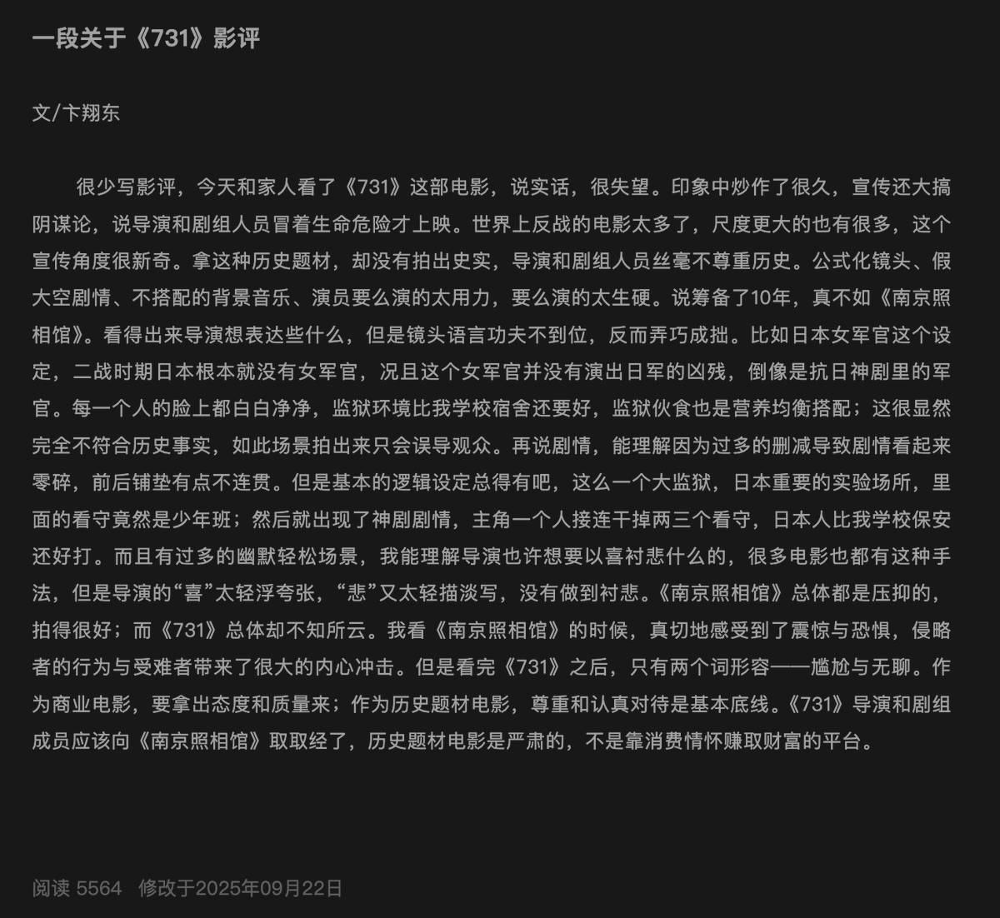

Aoi M
@aoim33
RT @xiaolong761216: 以下はWeChatの"公众号"で公開されていた映画≪731≫のレビューを翻訳したものです。これが中国の人の一般的な感想なのかなと思います。ひどい映画だということがよくわかりますね。。
《731》映画観劇レビュー：二言のみ—「気まずさ」と…

小龍(しゃおろん)🇯🇵in🇨🇳 VPN運営|レーシングカート🏎💨
@xiaolong761216
以下はWeChatの"公众号"で公開されていた映画≪731≫のレビューを翻訳したものです。これが中国の人の一般的な感想なのかなと思います。ひどい映画だということがよくわかりますね。。
《731》映画観劇レビュー：二言のみ—「気まずさ」と「退屈さ」
文／卞翔東 https://t.co/W2c0dM8zyw